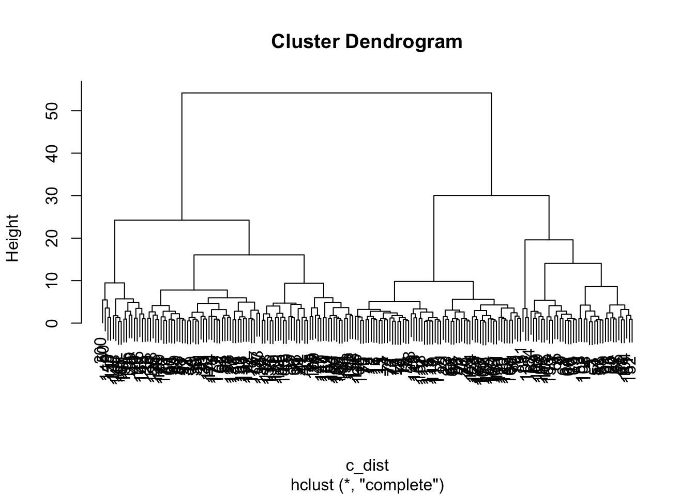
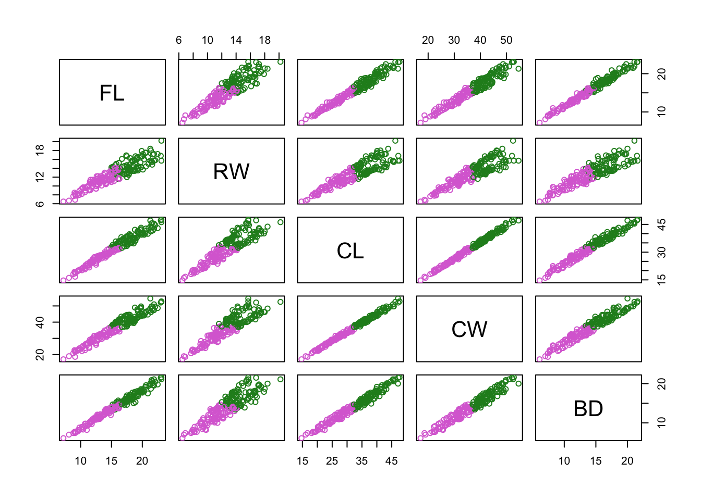
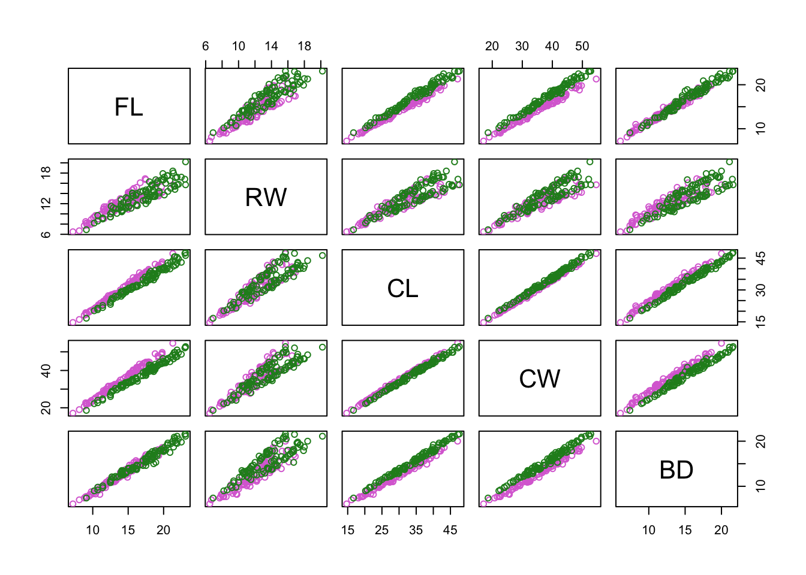
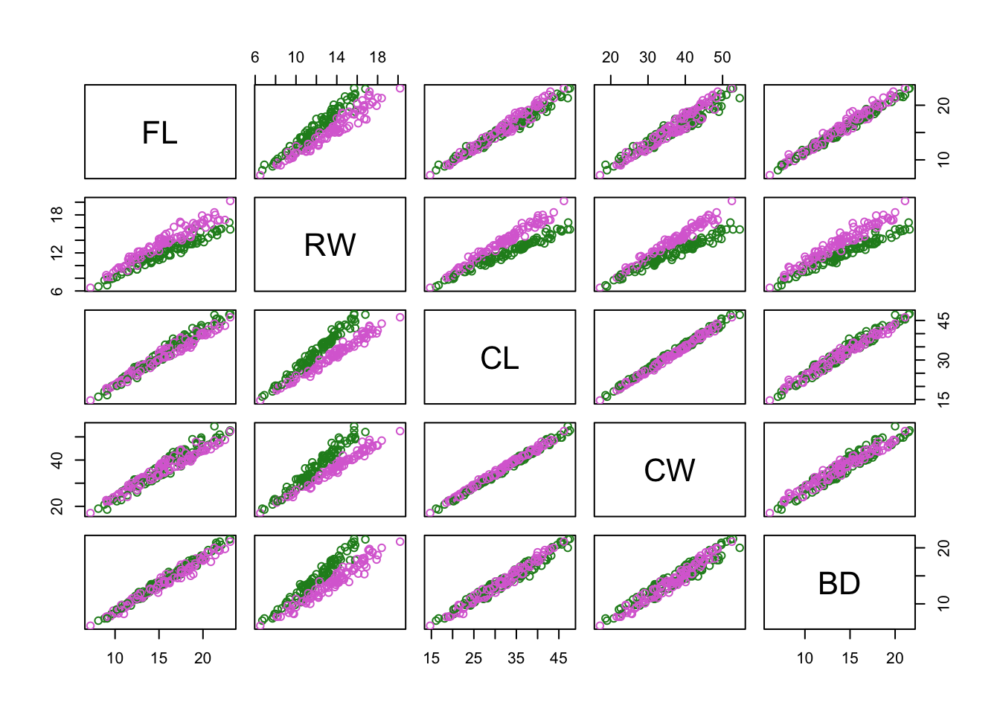
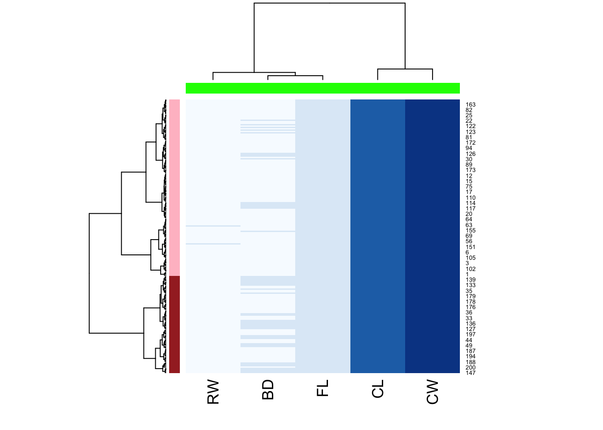
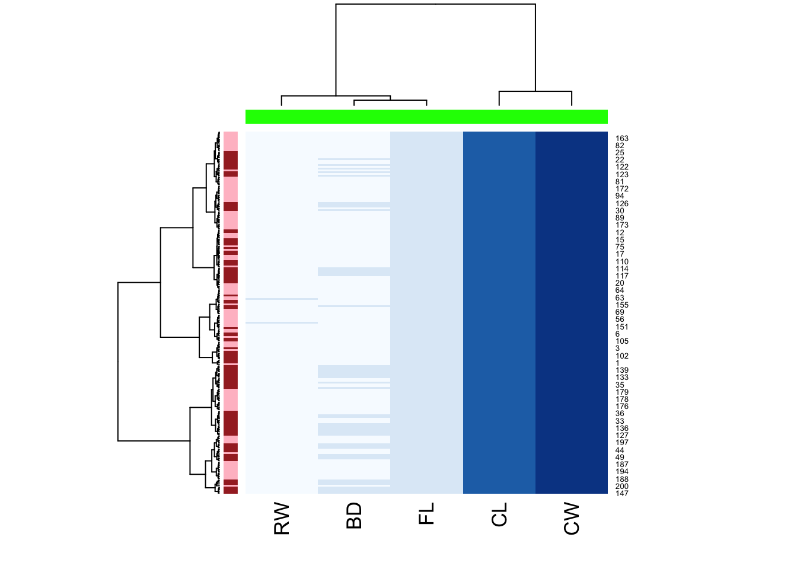

Module 1: Bonus Exercise Results
Load packages and data, subset needed columns:
Learn more about the data:
## sp sex index FL RW CL CW BD
## 1 B M 1 8.1 6.7 16.1 19.0 7.0
## 2 B M 2 8.8 7.7 18.1 20.8 7.4
## 3 B M 3 9.2 7.8 19.0 22.4 7.7
## 4 B M 4 9.6 7.9 20.1 23.1 8.2
## 5 B M 5 9.8 8.0 20.3 23.0 8.2
## 6 B M 6 10.8 9.0 23.0 26.5 9.8Subset needed columns:
Perform hierarchical clustering:

Colour-code samples based on cluster assignment. Assume there are two clusters.
Now create a pairs plot, but colour-code by: 1. by gene-expression based clusters 2. by species 3. by sex



Hierarchical clustering:
h <- hclust(dist(crabs_meas),method="ward.D2")
c2 <- cutree(h,k=2)
hclust_fun <- function(x){
f <- hclust(x, method = "ward.D2");
return(f)
}
library(RColorBrewer)
heatmap(
as.matrix(crabs_meas),
hclustfun = hclust_fun,
col = brewer.pal("Blues",n=8),
RowSideColors = c("pink","brown")[c2],
ColSideColors = rep("green",5)
)
Plot by sex:
heatmap(
as.matrix(crabs_meas),
hclustfun = hclust_fun,
col = brewer.pal("Blues",n=8),
RowSideColors = c("pink","brown")[factor(crabs$sex)],
ColSideColors = rep("green",5)
)